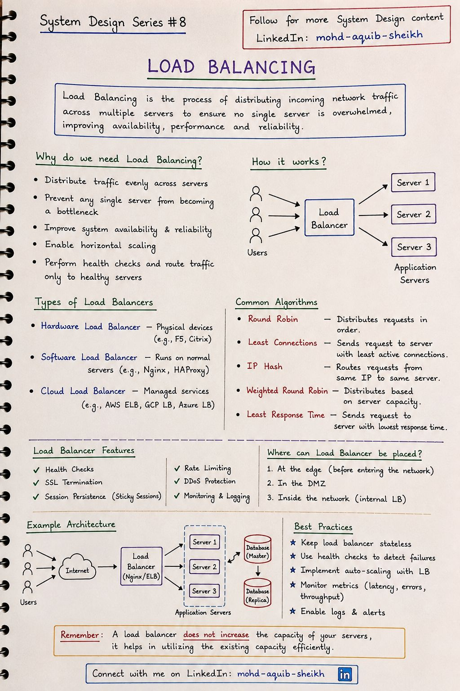
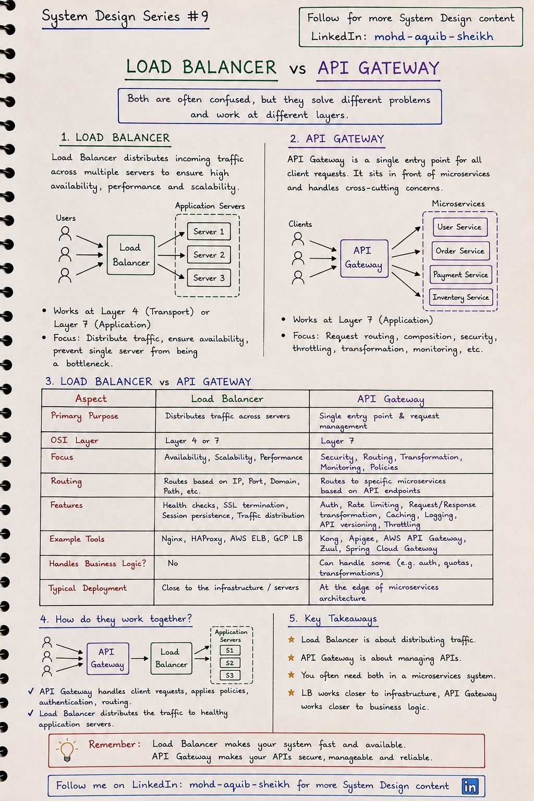
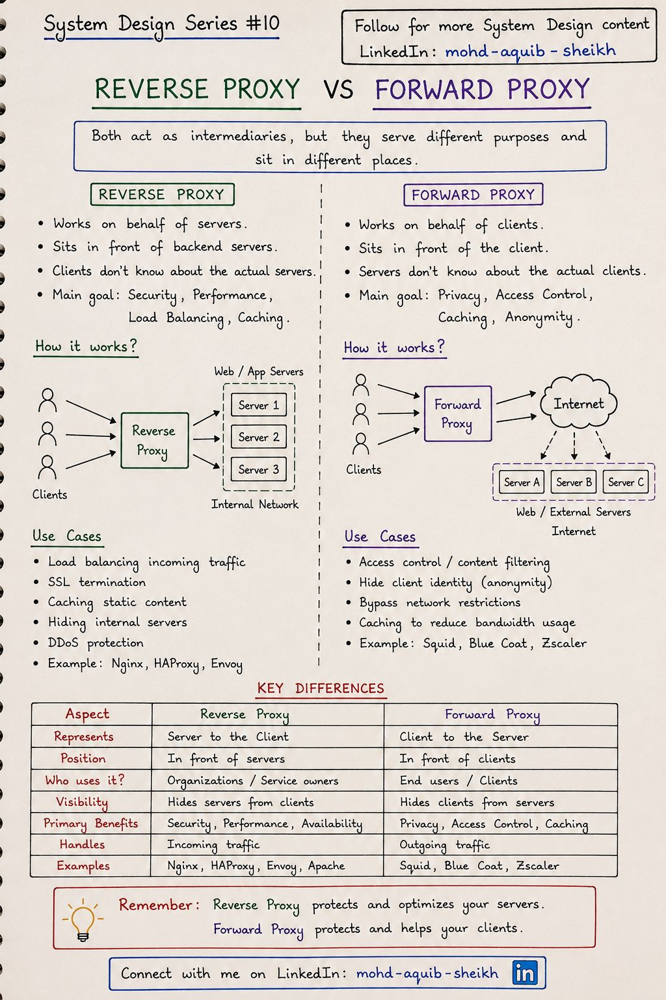

Балансировка, шлюзы и прокси
Между клиентом и вашим кодом почти всегда стоит посредник — и не один. Балансировщик, API-шлюз, обратный и прямой прокси похожи по устройству, но решают разные задачи. Эта глава разводит их по местам.
3.1Балансировка нагрузки#8
Балансировщик распределяет входящий трафик между несколькими серверами, чтобы ни один не был перегружен, и перестаёт отправлять запросы на те, что не прошли проверку здоровья. Именно он делает возможным горизонтальное масштабирование и обновление без простоя.


Алгоритмы
| Алгоритм | Как выбирает | Когда подходит |
|---|---|---|
| Round Robin | По очереди | Одинаковые серверы, короткие однородные запросы |
| Weighted Round Robin | По очереди с учётом веса | Серверы разной мощности, канареечный релиз (5% на новую версию) |
| Least Connections | Тому, у кого меньше активных соединений | Запросы разной длительности, долгие соединения |
| Least Response Time | Самому быстрому сейчас | Серверы с разной текущей загрузкой |
| IP Hash | Хэш адреса клиента → сервер | Нужна привязка клиента к серверу |
| Consistent hashing | Хэш ключа на кольце | Кэши и шарды: при изменении числа серверов перемещается лишь малая часть ключей |
- L4 и L7. L4-балансировщик видит только IP и порты и пробрасывает TCP-соединение целиком — быстро и для любого протокола. L7 разбирает HTTP: маршрутизирует по пути и заголовкам, завершает TLS, делает ретраи. L7 балансирует запросы, L4 — соединения; из-за этого долгоживущие HTTP/2- и gRPC-соединения через L4 распределяются неравномерно. Подробно — «Компьютерные сети», тема 13.
- Сам балансировщик — точка отказа. Его резервируют: пара узлов с плавающим IP (VRRP/keepalived), несколько экземпляров за anycast-адресом или управляемый облачный сервис, распределённый по зонам.
- Sticky sessions — костыль. Привязка клиента к серверу нужна, когда состояние лежит в памяти сервера. Она ломает равномерность и усложняет деплой; правильнее вынести состояние в Redis или в токен.
- Health check: liveness ≠ readiness. «Процесс жив» и «готов принимать трафик» (прогрет, подключён к БД) — разные проверки. В Spring Boot это
/actuator/health/livenessи/readiness.
3.2Балансировщик и API-шлюз#9
Их часто путают, потому что оба принимают запрос и пересылают его дальше. Разница — в вопросе, на который они отвечают. Балансировщик: «на какой экземпляр одного и того же сервиса отправить запрос?» Шлюз: «какому сервису этот запрос предназначен и можно ли его вообще пропускать?»


| Load Balancer | API Gateway | |
|---|---|---|
| Назначение | Распределить трафик между экземплярами | Единая точка входа и управление API |
| Уровень OSI | 4 или 7 | 7 |
| Маршрутизация | По IP, порту, домену, пути | По эндпоинту API к конкретному микросервису |
| Возможности | Health checks, TLS, sticky sessions | Аутентификация, лимиты, преобразование запросов, кэш, версионирование, логирование |
| Бизнес-логика | Нет | Немного сквозной: проверка токена, квоты |
| Инструменты | Nginx, HAProxy, AWS ELB, GCP LB | Kong, Apigee, AWS API Gateway, Spring Cloud Gateway |
Вместе, а не вместо. В реальной системе работают оба, причём балансировщиков несколько: внешний распределяет трафик между экземплярами самого шлюза (шлюз тоже нужно резервировать), шлюз проверяет токен и выбирает сервис, а дальше запрос попадает на внутренний балансировщик этого сервиса (в Kubernetes — Service). На рисунке конспекта показана только вторая половина цепочки.
Подробнее о шлюзе — в теме 15.
3.3Обратный и прямой прокси#10
Оба — посредники, но стоят на разных сторонах и представляют разные стороны. Reverse proxy стоит перед серверами и действует от их имени: клиент не знает, какой сервер ему ответил. Forward proxy стоит перед клиентами и действует от их имени: сервер не знает, какой клиент к нему обратился.


Reverse proxy — защищает серверы
- Скрывает внутреннюю сеть.
- Балансировка входящего трафика.
- Завершение TLS, сжатие.
- Кэш статики, защита от DDoS.
- Nginx, HAProxy, Envoy.
Forward proxy — помогает клиентам
- Скрывает клиента (анонимность).
- Контроль доступа и фильтрация контента.
- Обход сетевых ограничений.
- Кэш для экономии канала.
- Squid, Zscaler, корпоративный прокси.
X-Forwarded-For, и доверять ему можно, только если он выставлен вашим собственным прокси.
https.proxyHost в JVM), а его сертификат — добавить в truststore, если прокси расшифровывает TLS. Типичная причина «у меня локально работает, а на стенде — PKIX path building failed».
3.4Интерактив: алгоритмы балансировки под нагрузкой
3.5Самопроверка
Чем API-шлюз отличается от балансировщика нагрузки?
- Ничем
- Балансировщик распределяет трафик между копиями одного сервиса; шлюз — единая точка входа к разным сервисам с маршрутизацией по API, аутентификацией, лимитами, преобразованиями
- Шлюз работает на L4
- Балансировщик умеет аутентификацию
Какой прокси скрывает серверы от клиентов?
- Прямой (forward)
- SOCKS
- Обратный (reverse): клиент обращается к нему как к серверу
- VPN
Балансировщик — единая точка отказа. Как это решают?
- Несколько экземпляров: активный-резервный с плавающим IP (VRRP) или активный-активный за anycast/DNS
- Никак
- Увеличивают его память
- Отключают health check
Почему round robin плохо работает для запросов разной длительности и что выбрать вместо него?
Он считает запросы, а не нагрузку: одному серверу могут достаться три тяжёлых отчёта подряд, другому — три лёгких запроса. Least connections учитывает текущую занятость. Ещё лучше в распределённой конфигурации — «power of two choices»: выбрать два случайных сервера и отправить на менее загруженный.
В какой последовательности запрос проходит балансировщик и API-шлюз?
Обычно так: внешний балансировщик → один из экземпляров шлюза → (внутренний балансировщик) → экземпляр сервиса. Шлюз — такой же сервис, его нужно масштабировать и резервировать, поэтому перед ним тоже стоит балансировщик.
Чем reverse proxy отличается от forward proxy одной фразой?
Обратный прокси настраивает владелец серверов, и клиент о нём не знает; прямой прокси настраивает клиент (или его сеть), и сервер о нём не знает.
Сервис пишет в лог IP-адреса клиентов, и все они одинаковые. Почему?
Сервис стоит за обратным прокси или L7-балансировщиком и видит адрес последнего перехода. Адрес клиента нужно брать из X-Forwarded-For (или Forwarded), предварительно настроив список доверенных прокси — иначе клиент сможет подделать заголовок и обойти, например, лимиты по IP.